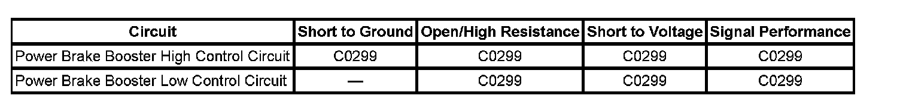

C0299
DTC C0299
Diagnostic Instructions
^ Perform the Diagnostic System Check - Vehicle prior to using this diagnostic procedure. Initial Inspection and Diagnostic Overview
^ Review Strategy Based Diagnosis for an overview of the diagnostic approach.
^ Review Diagnostic Procedure Instructions provides an overview of each diagnostic category.
DTC Descriptor
DTC C0299
Brake Booster Performance
Diagnostic Fault Information
Perform the Diagnostic System Check - Vehicle prior to using this diagnostic procedure. Initial Inspection and Diagnostic Overview

Circuit/System Description
The electronic brake control module (EBCM) provides a bi-directional power, and ground circuits to the power brake booster actuator. The power brake booster actuator converts electrical inputs into a mechanical force to apply the brake booster to assist the driver as necessary in stability control. The EBCM monitors the vacuum level in the power brake booster, and will set a DTC if the vacuum is too low.
Conditions for Running the DTC
^ The ignition is ON.
^ Ignition voltage is greater than 9 volts.
^ The engine is running for the vacuum related fault to set.
Conditions for Setting the DTC
^ An open is detected on the high or low power brake booster actuator circuits.
^ A short to ground is detected on the high power brake booster actuator circuit.
^ A short to voltage is detected on the high power brake booster actuator circuit.
^ A short together in the high and low circuits is detected in the power brake booster actuator circuit.
^ A condition in which no vacuum is detected in the power brake booster for approximately 10 seconds after start-up.
^ A condition in which low vacuum is detected in the power brake booster for approximately 60 seconds or longer after start-up, or is detected while driving.
Action Taken When the DTC Sets
One or more of the following actions may occur:
The SERVICE BRAKE BOOSTER will display on the Driver Information Center (DIC).
Conditions for Clearing the DTC
^ The condition for the DTC is no longer present.
^ The EBCM automatically clears the history DTC when a current DTC is not detected in 100 consecutive drive cycles.
Reference Information
Schematic Reference
Antilock Brake System Schematics
Connector End View Reference
Antilock Brake System Connector End Views
Description and Operation
ABS Description and Operation (Under 8600 GVW ) ABS Description and Operation (Equal to or Over 8600 GVW)
Electrical Information Reference
^ Circuit Testing
^ Connector Repairs
^ Testing for Intermittent Conditions and Poor Connections
^ Wiring Repairs
Scan Tool Reference
Scan Tool Data List for EBCM
Circuit/System Verification
DTC C0299 will set as result of power brake booster actuator or circuit failure, test for power, and ground circuits to the EBCM. These electrical failures will typically be set immediately after key-up.
Test and repair the EBCM power or ground circuits if necessary.
DTC C0299 will set as result of the power brake booster vacuum is too low. These will be set approximately 10 seconds or more after start-up, and may be intermittent.
Locate and repair the source of the vacuum leak. Refer to Brake Assist System Diagnosis (Vacuum Assist) Component Tests and General Diagnostics Brake Assist System Diagnosis (Hydraulic Assist). Component Tests and General Diagnostics
Circuit/System Testing
Important: It is recommend that Component Testing is performed before Circuit Testing when diagnosing the power brake booster actuator.
1. Ignition OFF, disconnect the harness connector from the power brake booster actuator.
2. Test for less than 25.0 ohm of resistance between the harness connector terminal 5 and ground.
^ If greater than 25.0 ohm, test the ground circuit for an open/high resistance.
3. Connect a test lamp between the actuator harness connector terminal 1 and terminal 5.
4. Ignition ON, command the Active Brake Booster to ON and OFF with a scan tool.
^ If the test lamp remains OFF during the commands, test for a short to ground or an open/high resistance on either control circuit. If the circuits test normal, replace the electronic brake control module EBCM.
^ If the test lamp is always ON, test the control circuits for a short to battery positive. If the circuit tests normal, locate and repair the source of the vacuum leak.
5. If all circuits test normal, test or replace the vacuum brake booster assembly.
6. If all circuits test normal, and no vacuum leaks were found, replace the electronic brake control module (EBCM).
Component Testing
1. Ignition OFF, disconnect the harness connector at the power brake booster actuator.
2. Test for infinite ohms of resistance between the actuator terminal 1 and ground.
^ If less than infinite ohms, replace the vacuum brake booster assembly.
3. Test for 2-3 ohms of resistance between terminals 1 and 5 at the power brake booster actuator.
If the test is infinite resistance, replace the vacuum brake booster assembly.
Repair Instructions
Perform the Diagnostic Repair Verification after completing the diagnostic procedure. Verification Tests
^ Control Module References for EBCM replacement, setup, and programming
^ Vacuum Brake Booster Replacement